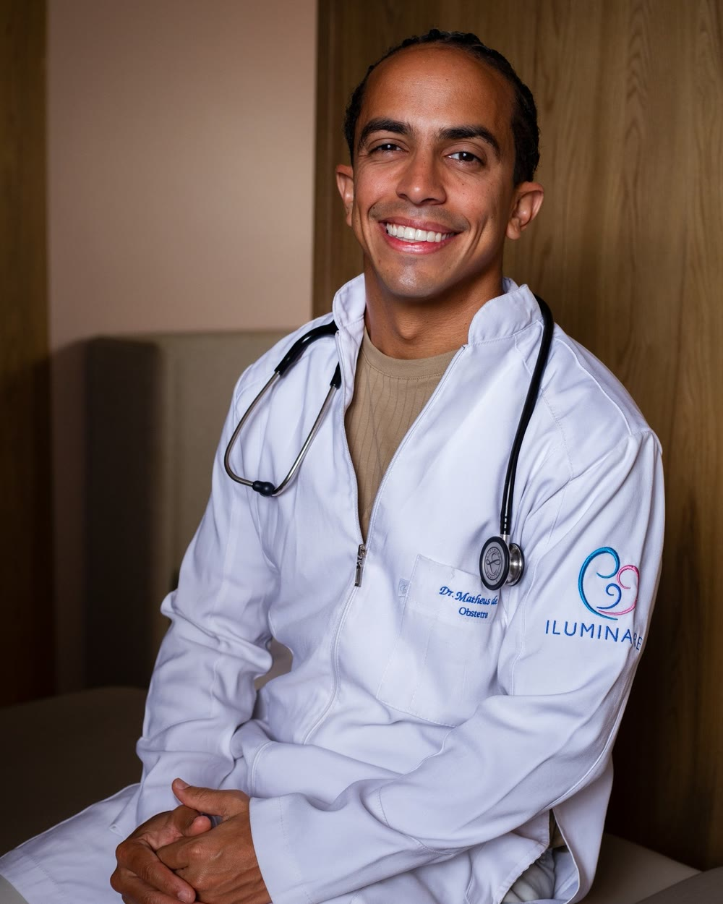
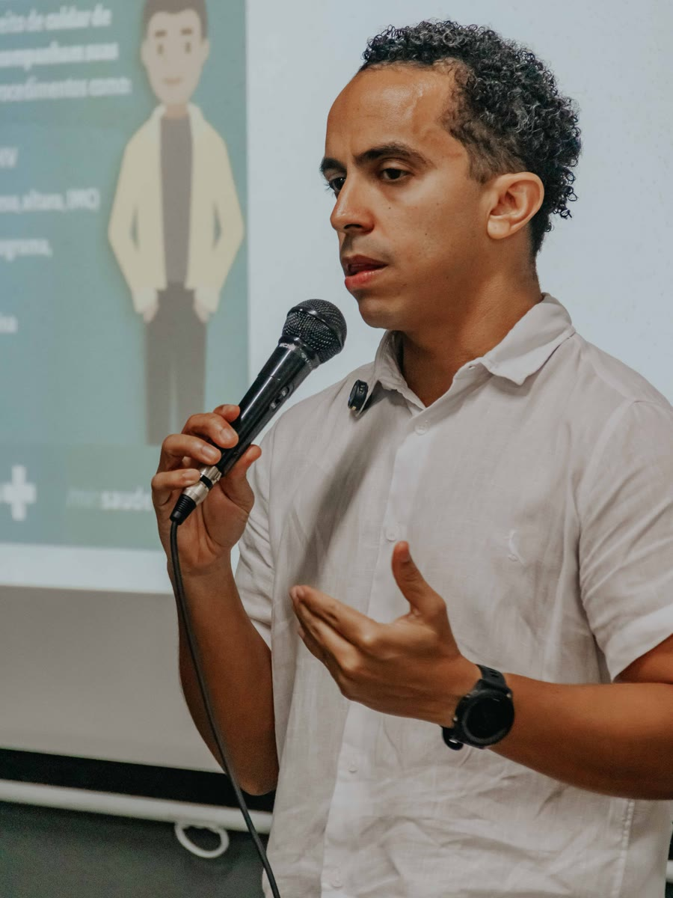

Obstetrícia · Salvador
Dr. Matheus de Sá
Pré-natal, parto e pós-parto com a mulher participando de cada decisão.
Obstetra formado pela UFBA, com RQE em Ginecologia e Obstetrícia e anos de trabalho em maternidades públicas, filantrópicas e privadas. Consultório em Ondina, Salvador.

Por onde começar
Em que momento você está?
Cada página explica o que costuma ser conversado e avaliado em cada fase. A conduta é sempre individual, definida em consulta.
Descobri que estou grávida
Consultas, exames e as conversas que preparam para as decisões.
Pré-natalPartoQuero me preparar para o parto
Plano de parto, acompanhante, analgesia e o que pode mudar.
Parto humanizadoPós-partoO bebê nasceu. E eu?
Recuperação, amamentação, saúde mental e contracepção.
Pós-partoPrimeira consultaQuero conhecer antes
Como é a conversa inicial e o que levar no dia.
A consultaTambém: Sobre o Dr. MatheusOnde atendo
O pré-natal em 4 conversas
Mais do que exames: conversas que preparam.
Para ele, o pré-natal é o espaço para a mulher entender o próprio corpo, esclarecer medos e se preparar para decisões que podem aparecer mais adiante.
“Quanto mais dessas conversas acontecem antes, menos tudo precisa ser decidido no susto.”Dr. Matheus de Sá
As mudanças da gestação, os exames de cada fase e os sinais de alerta.
Pré-natalLocal de parto, acompanhante, doula e plano de parto, conversados com antecedência.
Plano de partoAs formas de alívio da dor e em que momento cada uma pode entrar.
Parto humanizadoQue intervenções podem ser necessárias e como a decisão é tomada com você.
Quando o plano mudaDa gestação ao pós-parto
Um acompanhamento do começo ao depois.
“Meu papel é acompanhar, avaliar, orientar e intervir quando necessário. Sempre explicando o que está acontecendo.” — Dr. Matheus de Sá
- Etapa 1Primeira consulta
A sua história, as suas dúvidas e o que você espera da gestação e do parto.
- Etapa 2Pré-natal
Consultas e exames de cada fase, com tempo para entender cada resultado.
- Etapa 3Plano de parto
Limites, preferências, medos e consentimento conversados antes do dia.
- Etapa 4Parto
Assistência individualizada e baseada em evidências, com a mulher participando das decisões.
- Etapa 5Pós-parto
Recuperação, amamentação, saúde mental, sexualidade e contracepção.
Sangramento, perda de líquido, dor forte, febre ou o bebê mexendo menos? Não espere a consulta: procure a maternidade ou o SAMU (192). O consultório atende com hora marcada e não é serviço de urgência.
Trajetória
Da Cidade Baixa à sala de parto.
Soteropolitano, ele conta que o obstetra que é hoje começou a ser construído muito antes da faculdade. Formatura em Medicina
Formatura em Medicina
pela UFBA, 2016
- OrigemCidade Baixa
Nascido e criado em Salvador.
- 1997Colégio da Polícia Militar
Aprovado no CPM da Bahia.
- 2010Medicina na UFBA
Vestibular em 2010, formatura em 2016.
- InternatoMaternidade Climério de Oliveira
Onde encontrou a obstetrícia.
- HojeObstetra em Salvador
Depois das Forças Armadas, da residência e de anos em maternidades, o consultório em Ondina.

Nas palavras dele
“No parto, meu papel não é ocupar o centro da história. É estar preparado para cuidar para que ela possa ocupá-lo.”Dr. Matheus de Sá
“Parto humanizado não é ausência de técnica. Também não é promessa de parto normal.”
Dr. Matheus de Sá“Nenhum obstetra pode garantir a via de parto. O que pode ser oferecido é uma assistência comprometida com segurança, escuta, informação e respeito às escolhas da mulher.”
Dr. Matheus de SáAvaliações no Google
O que as famílias contam.
115 avaliações na ficha pública · trechos com nome abreviado
Desde a primeira consulta, sempre me senti acolhida, segura e respeitada.
Respeitou nossas escolhas no momento do parto, ao mesmo tempo que nos orientava, tornando esse dia mais leve e bonito.
A serenidade e o cuidado foram fundamentais para eu me sentir bem e confiante.
Iniciamos as tentativas para um parto normal, mas […] precisamos seguir para a cesariana. Mesmo com a mudança de planos, tive um parto extremamente humanizado.
Conteúdos
Para ler antes da consulta.
Textos que o Dr. Matheus publica sobre gestação, parto e pós-parto.
As conversas que ajudam a não decidir tudo no susto.
Ler ↗PartoNinguém pode prometer um parto normalO que pode ser oferecido é segurança, escuta e informação.
Ler ↗AutonomiaAutonomia no parto não é decidir sozinhaParticipar das decisões com informação e apoio.
Ler ↗GestaçãoPlacenta baixa: isso significa cesárea?Nem sempre. Como essa informação é interpretada.
Ler ↗Pós-partoO bebê nasceu. A mulher não deixa de ser pacienteOs cuidados com a mãe depois do nascimento.
Ler ↗No sitePré-natalAs quatro conversas e os sinais de alerta.
Ler no site →Consultório
Ondina, sala 701.
No Edifício Central Pinheiro, na Av. Anita Garibaldi, em Salvador. O endereço é o da ficha do Google.
Av. Anita Garibaldi, 1211 · Ondina · Salvador – BA · 40170-130
Como chegarConfirme o dia, o horário e o seu plano pelo WhatsApp (71) 99678-2205.
Dúvidas frequentes
Perguntas comuns
O Dr. Matheus acompanha parto normal e cesárea?
Ele acompanha a gestação e o parto. Como ele mesmo escreve, nenhum obstetra pode garantir a via de parto: cada conduta é avaliada de forma individual, explicada com clareza e decidida com a participação da mulher.
Posso ter acompanhante e doula?
O acompanhante no parto é um direito garantido por lei (Lei 11.108/2005). A presença da doula é conversada no pré-natal; confirme também as regras da maternidade escolhida.
Quando começar o pré-natal?
Assim que souber da gestação. Se ainda está planejando engravidar, a consulta antes da gestação também pode ajudar.
Em que maternidade ele atende?
O local de parto é um dos assuntos do pré-natal. Pergunte na consulta ou pelo WhatsApp.
Atende plano de saúde?
Confirme pelo WhatsApp quais planos são aceitos hoje.
Qual é o horário?
A ficha do Google informa segunda a sexta, das 7h30 às 19h, com hora marcada. Confirme o dia e o horário pelo WhatsApp.
Agende
Grávida ou planejando? Comece pela conversa.
Consulta com hora marcada no Edifício Central Pinheiro, Ondina, Salvador. Fale pelo WhatsApp (71) 99678-2205.